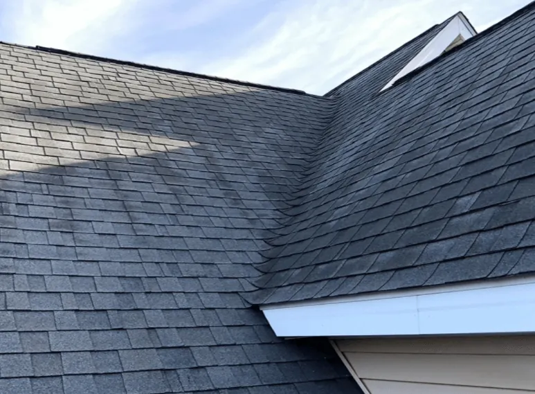
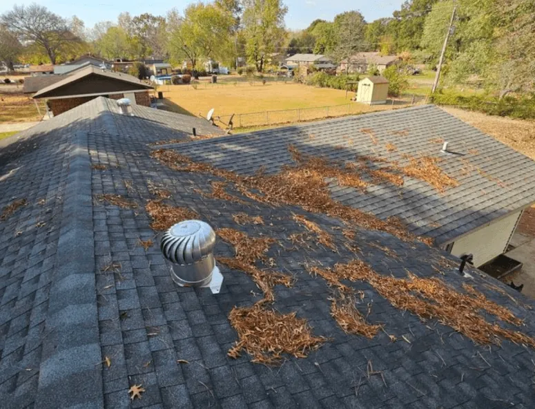
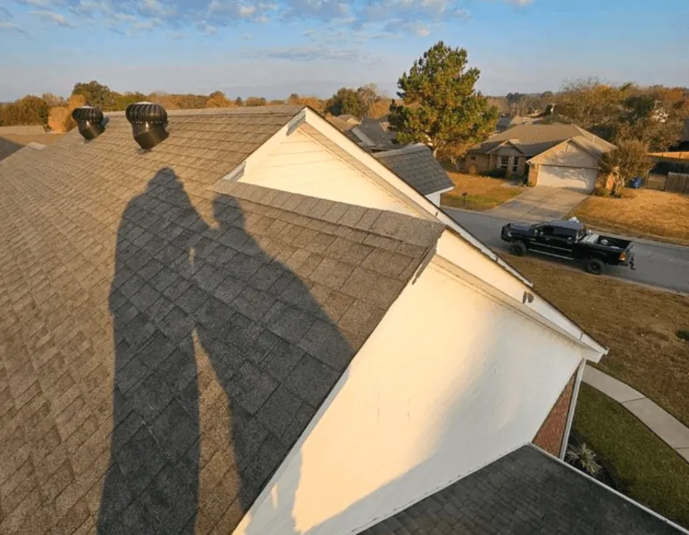

Your roof is a critical part of your property that shields you from the elements, contributes to energy efficiency, and enhances your home’s aesthetic appeal.
But like any other part of your home, it requires regular maintenance. This is where a free roof inspection comes in.
Scheduling a free roof inspection every season can save you from expensive repairs later on. It can help identify minor issues before they escalate into major problems.
A professional roofing contractor has the expertise to spot potential problems that may not be visible to the untrained eye. They can assess the impact of seasonal changes on your roof and recommend necessary repairs or maintenance.
In this article, we will explore the top five reasons to schedule a free roof inspection every season. Whether you own a residential or commercial property, you’ll find this information valuable.
So, let’s dive in and learn why regular roof inspections are a smart move for every property owner.
1. Early Detection of Minor Issues
Scheduling regular roof inspections is crucial for catching small issues early. These minor problems, if left unchecked, can develop into expensive repairs that affect the whole structure.
During these inspections, roofing contractors can identify common issues like loose shingles, tiny leaks, or damaged flashing. These might seem insignificant initially but can worsen with time.
Seasonal changes can dramatically impact your roof’s condition. Harsh winters may cause ice dams or freeze-thaw cycles that damage roofing materials.
Spring brings heavy rains and winds, while summer’s UV rays can deteriorate certain roofing components. Each season presents unique challenges that need addressing.
Regular inspections help pinpoint weather-related damage and minor wear. Consider the following reasons why early detection through seasonal inspections is essential:
- Prevents minor damage from escalating into major issues
- Minimizes the risk of interior water damage from leaks
- Preserves the roof’s structural integrity and materials
- Maintains the roof’s energy efficiency and overall performance
- Extends the lifespan of your roofing system by addressing issues promptly
By catching problems early, you avoid more expensive repairs down the line. This proactive approach is beneficial for both residential and commercial properties.
2. Cost Savings and Financial Planning
Regular roof inspections are a smart way to save money and plan for future expenses. By identifying issues early, homeowners can avoid costly emergency repairs that can disrupt finances.
Emergency roof repairs often come with a hefty price tag. When a problem is detected too late, it may require extensive work, costing thousands more than a simple fix.
Preventive maintenance through regular inspections offers financial advantages. Many roofing companies offer free inspections, providing a great opportunity to assess your roof’s condition without upfront costs.
During these free inspections, contractors might provide a detailed estimate for any suggested repairs or maintenance. This allows you to budget appropriately and make informed financial decisions.
Scheduling these inspections provides several financial benefits:
- Saves money by addressing minor issues before they escalate
- Allows for better budget planning with free estimates
- Helps avoid unexpected expenditures with emergency repairs
- Increases the lifespan of your roof, reducing overall maintenance costs
- Provides a clear understanding of future roofing expenses
Proactively managing your roof’s health offers both peace of mind and financial security. By partnering with a reputable roofing contractor, you can ensure your financial plans remain intact, while keeping your property secure and well-maintained.
3. Safety and Structural Integrity

A safe home starts with a solid roof. Regular inspections play a crucial role in ensuring the safety of everyone in your home. They help identify potential hazards that could cause harm if left unchecked.
Roofs endure weather elements and wear over time, which can compromise their strength. Without routine checks, small issues like loose shingles or leaks might go unnoticed. These can eventually lead to severe structural damage.
By assessing the roof regularly, it’s easier to maintain its integrity. Expert roofing contractors can spot early signs of weakness that might be missed by the untrained eye. Regular roof inspections ensure that the home’s structure remains sound and secure.
Maintaining a strong roof is also key to preventing accidents and injuries. Damaged roofs can collapse or cause ceiling damage, posing serious risks to occupants. Inspections can help prevent these dangerous scenarios from occurring.
Regular inspections can provide homeowners with vital benefits such as:
- Identifying potential safety hazards early
- Ensuring the roof remains structurally sound and secure
- Preventing accidents caused by weakened roofing components
- Maintaining a comfortable, damage-free living environment
- Offering peace of mind about home safety
4. Warranty and Insurance Compliance
Roof warranties often require regular inspections to remain valid. Many manufacturers state that homeowners must conduct periodic checks to claim any warranty services. Ignoring this requirement could mean losing valuable coverage.
Insurance policies also have stipulations tied to roof maintenance. Insurers may demand evidence of routine inspections to process claims for roof damage. Without this documentation, claims might be delayed or denied.
Having a professional roofing contractor conduct these inspections is beneficial for homeowners. They provide detailed reports highlighting any issues and confirming the roof’s condition. These reports are crucial for both warranty and insurance compliance.
The best roofing companies offer thorough inspection documentation. They include photos, checklists, and observations, which help verify that the necessary care has been taken. These records act as proof should any warranty or insurance questions arise.
Staying compliant with warranties and insurance policies is easier with regular inspections. Homeowners can enjoy the full benefits of these safeguards by ensuring their roof checks are up to date.
Benefits of maintaining warranty and insurance compliance through inspections:
- Ensures warranty coverage remains valid
- Facilitates smoother and faster insurance claims
- Provides evidence of regular roof maintenance
- Keeps homeowners informed of their roof’s condition
- Offers peace of mind knowing that coverage is intact
5. Maintaining Property Value and Aesthetics

A well-maintained roof significantly enhances property value. Potential buyers often equate a sturdy roof with a well-cared-for home. Inspections ensure your roof stays in peak condition, increasing your property’s appeal.
Regular maintenance keeps your roof looking its best. Clean, intact shingles and flashing contribute to a polished exterior. This curb appeal can make a big difference in market competitiveness.
Aesthetic issues are often precursors to functional problems. Dirty or damaged shingles might mean underlying concerns. Regular inspections catch these issues early, preventing larger problems that could lower property value.
For both residential roofing and commercial properties, appearance matters. First impressions count, especially for businesses attracting clients. A clean and well-maintained roof projects professionalism and success.
Investing in routine roof inspections supports the property’s overall aesthetic and market value. Regular upkeep keeps it beautiful, functional, and valuable for years to come.
Ways a well-maintained roof boosts property value and aesthetics:
- Improves curb appeal and first impressions
- Prevents minor issues from becoming larger problems
- Enhances market competitiveness of the property
- Projects a positive image in the neighborhood
- Signals overall home maintenance and care
Remember, a roof’s appearance and condition reflect your property as a whole. Regular inspections and maintenance ensure your roof remains a true asset, not a liability.
The Importance of Choosing a Qualified Roofing Contractor

Regular roof inspections offer invaluable benefits, from early issue detection to maintaining property value. Enlisting a qualified roofing contractor ensures comprehensive inspections and expert recommendations.
Partnering with a reputable roofing company grants you peace of mind. Opt for professionals committed to quality, and your roof will remain strong and reliable for years.
Schedule Your Free Roof Inspection Today
Now is the perfect time to ensure your roof is in top condition. Schedule a free roof inspection with EZ Roofing, a trusted roofing company, to safeguard your home or business.
Call today or fill out our contact form to set up your appointment today. Don’t wait until minor problems become major headaches.